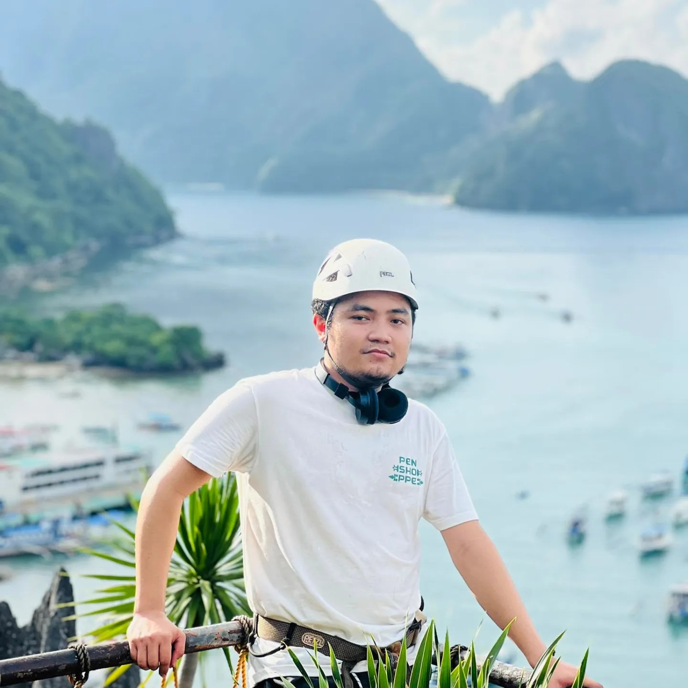
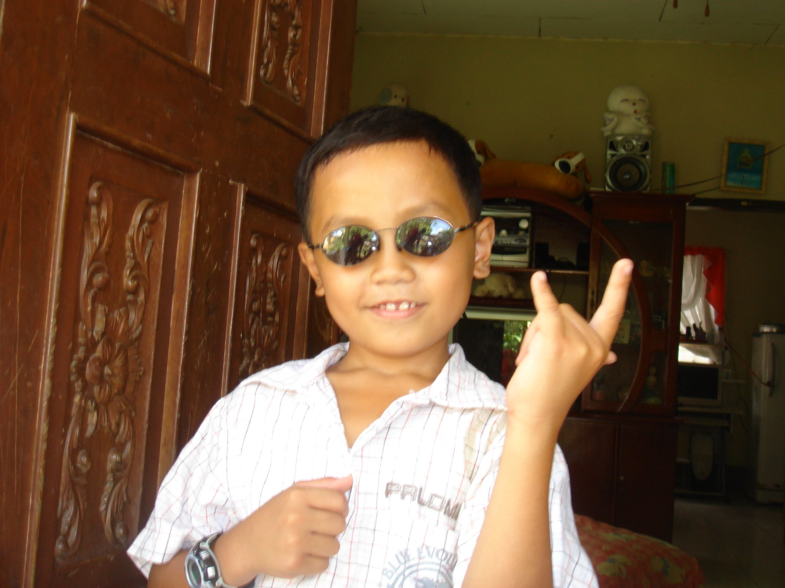
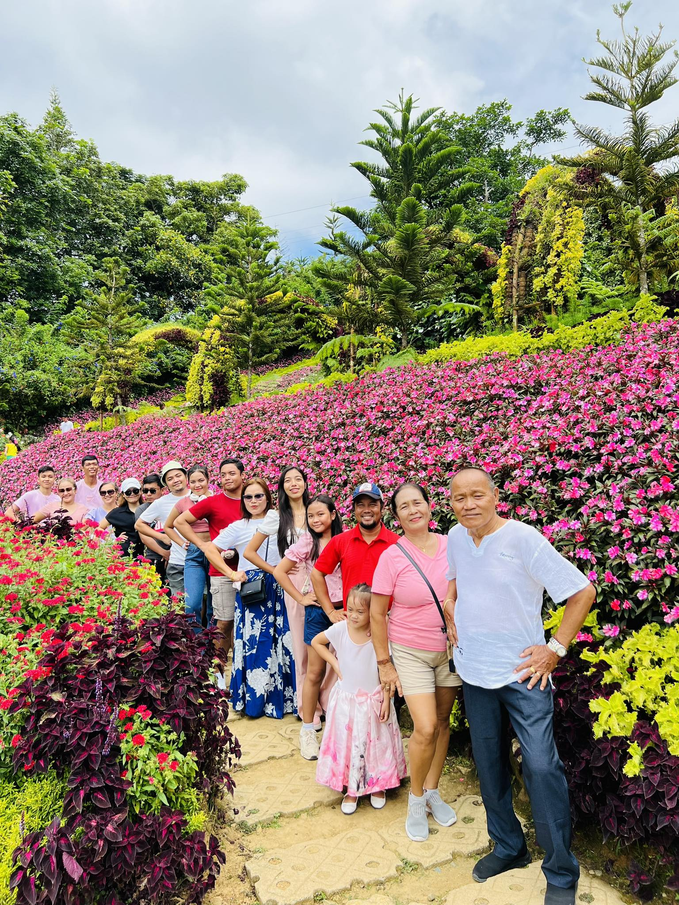
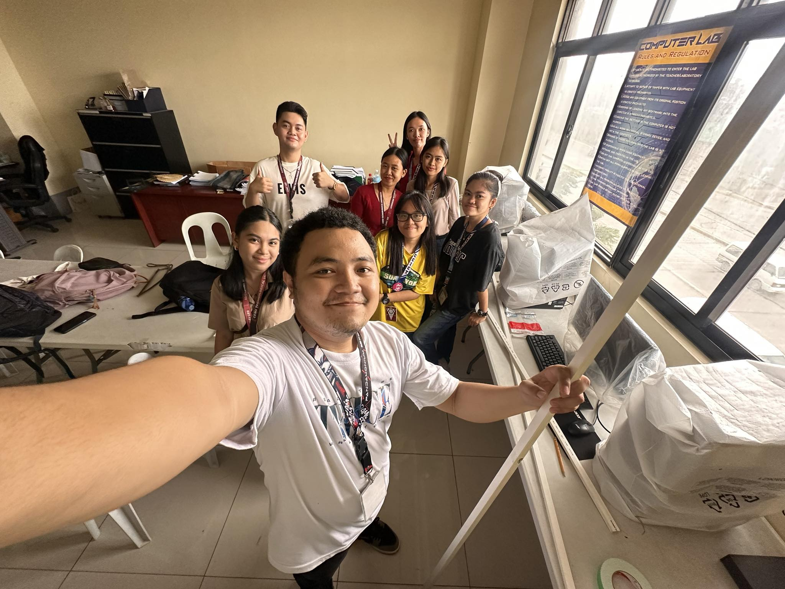

Skills
- Programming Languages: Python, Java, C
- Web Development: HTML, CSS
- Tools: Pycharm, Notepad, IntelliJ
- Soft Skills: Problem-solving, Teamwork, Communication


My name is Emmanuel L. Inot, and I am from Cebu, Philippines. I am a second-year Information Technology student at CTU University. I live in Zone 4 Buaya, Lapu - Lapu City.
I have always been passionate about technology and innovation. Growing up, I was fascinated by how things work and enjoyed taking apart gadgets to understand their inner workings. My personal values include perseverance, and continuous learning. I am inspired by the rapid advancements in technology and aim to contribute to this field by developing innovative solutions. My current goal is to to find happiness in this world and let God do the work and I trust him
 I am currently studying at CTU University, pursuing a degree in Information Technology. I was also a student of Bankal Elementary School, High school and Asian Learning Center Pajo. I was also a Boy Scout during my High School Days but I end it when I was in grade 8 because the leader of Boy Scout sucks and that time, almost 80% of participants quit because of bad leadership. During my time here in CTU, I try learning courses such as Data Structures, Algorithms, and Web Development.

Email: emmanuelinot85@gmail.com
GitHub: Emmanuel L. Inot
Facebook: Emmanuel L. Inot
Instagram: Emmanuel L. Inot